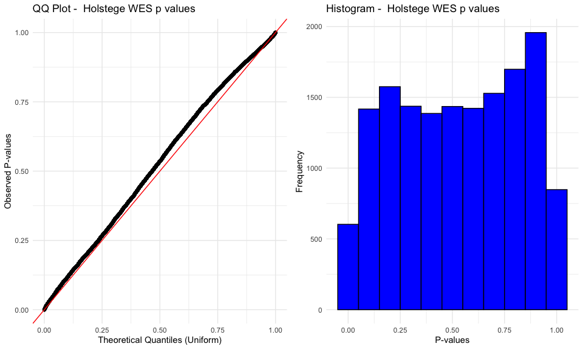
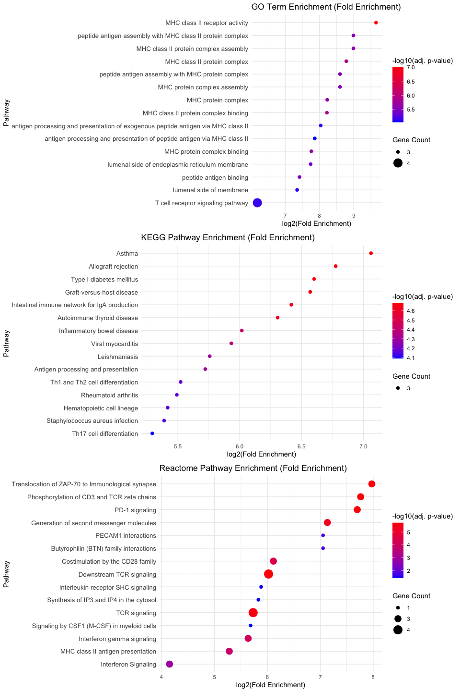

Last updated: 2025-04-11
Checks: 6 1
Knit directory: my_project_notes/
This reproducible R Markdown analysis was created with workflowr (version 1.7.1). The Checks tab describes the reproducibility checks that were applied when the results were created. The Past versions tab lists the development history.
The R Markdown file has unstaged changes. To know which version of
the R Markdown file created these results, you’ll want to first commit
it to the Git repo. If you’re still working on the analysis, you can
ignore this warning. When you’re finished, you can run
wflow_publish to commit the R Markdown file and build the
HTML.
Great job! The global environment was empty. Objects defined in the global environment can affect the analysis in your R Markdown file in unknown ways. For reproduciblity it’s best to always run the code in an empty environment.
The command set.seed(2024) was run prior to running the
code in the R Markdown file. Setting a seed ensures that any results
that rely on randomness, e.g. subsampling or permutations, are
reproducible.
Great job! Recording the operating system, R version, and package versions is critical for reproducibility.
Nice! There were no cached chunks for this analysis, so you can be confident that you successfully produced the results during this run.
Great job! Using relative paths to the files within your workflowr project makes it easier to run your code on other machines.
Great! You are using Git for version control. Tracking code development and connecting the code version to the results is critical for reproducibility.
The results in this page were generated with repository version f1cf6cf. See the Past versions tab to see a history of the changes made to the R Markdown and HTML files.
Note that you need to be careful to ensure that all relevant files for
the analysis have been committed to Git prior to generating the results
(you can use wflow_publish or
wflow_git_commit). workflowr only checks the R Markdown
file, but you know if there are other scripts or data files that it
depends on. Below is the status of the Git repository when the results
were generated:
Ignored files:
Ignored: .DS_Store
Ignored: analysis/.DS_Store
Ignored: analysis/Gene_based_COTA/
Ignored: analysis/SNP_based_COTA/.DS_Store
Unstaged changes:
Modified: analysis/2024-04-10_snp_summary.Rmd
Modified: analysis/index.Rmd
Note that any generated files, e.g. HTML, png, CSS, etc., are not included in this status report because it is ok for generated content to have uncommitted changes.
These are the previous versions of the repository in which changes were
made to the R Markdown
(analysis/2024-04-10_snp_summary.Rmd) and HTML
(docs/2024-04-10_snp_summary.html) files. If you’ve
configured a remote Git repository (see ?wflow_git_remote),
click on the hyperlinks in the table below to view the files as they
were in that past version.
| File | Version | Author | Date | Message |
|---|---|---|---|---|
| html | b5dee20 | renga011 | 2025-04-11 | Build site. |
| html | b646a9e | renga011 | 2025-04-11 | Build site. |
| Rmd | e432b0c | renga011 | 2025-04-11 | wflow_publish("analysis/2024-04-10_snp_summary.Rmd") |
Using:
Cruchaga trans pQTL (renamed genes)
WES burden test scores from Lee et al.
some statistics of the WES data from Lee et al.
Size of study cohort (ADSP 17k): 6519 cases (total 13371 with controls)
Burden scores were computed for genes using different sets of variant types. Number of genes for each of these variant categories are as follows
plof_ds (putative loss of function - deleterious strict) - 15306
WE USE THESE GENES FOR COTA AS THESE ARE HIGH CONFIDENCE, HIGH IMPACT
plof - 11771
disruptive_missense - 10776
missense - 18170
synonymous - 18100
# proteins tested in trans pQTL: 6983
# proteins common with WES data (using only pLOF_ds): 5530
# significant pairs detected: 0
No detected significant pairs from COTA passed the FDR threshold of q < 0.1, despite the sample size being ~6.5k cases (total ~13k with controls).
We checked the distribution of WES-derived p-values:
Insert QQ plot and histogram here

| Version | Author | Date |
|---|---|---|
| b646a9e | renga011 | 2025-04-11 |
The qq-plot shows a small kink away from the null in between, which maybe due to this being p values pooled across ancestries, a smaller effective sample size (lesser carriers), or combination of both.
~ This is only 6k samples and pooled across ancestries. Maybe therefore, there is no much power in the COTA
Gene tagging with multiple aptamers
The trans pQTL data from Cruchaga has multiple aptamers tagging the same gene/protein.
- Correlation between aptamers tagging same protein in Cruchaga et al.: 0.79
To preserve this signal:
When gene IDs are duplicated, we rename them as
GENE_1,GENE_2, etc.If even one aptamer shows significance, it’s worth examining as it may provide clues on the mechanism (eg: If aptamer specific to N-terminus is significantly mediating but that targetted to C-terminus isn’t).
So we apply this renaming consistently across:
pQTL_trans: p value matrix for the trans eQTLs
WES_pvals: p values corresponding to Holstege rare variant burden scores
ref.table.keep: annotations for every gene on its start, end, chromosome, gene name, gene type (protein_coding/lncRNA)
pQTL_cis: cis pQTLs detected by Cruchaga et al. (2023). Taken from their Supplementary tables
Using:
Cruchaga trans pQTL (renamed genes)
WES burden test scores from Holstege et al.
some statistics of the WES data Holstege et al.
- Size of study cohort (mixed cohort - see Supplementary table 1 of paper) : 6519 cases (total 13371 with controls)
Burden scores were computed for genes using different sets of variant types. Number of genes for each of these variant categories are as follows
LOF and REVEL score >= 25 - 15306
WE USE THESE GENES FOR COTA as most genes are included in the data for this category
LOF and REVEL score >= 50 - 11771
LOF and REVEL score >= 75 - 10776
# proteins tested in trans pQTL: 6983
# proteins common with WES data: 4855
# genes in the WES data with significant burden test score (p < 1e-6): 4
# significant pairs detected (q < 0.1): 210
Core genes: 7
Peripheral genes: 18
Gene-dense regions are more informative than individual gene counts.
genomic regions with hits: 4
Perform GO/KEGG/Reactome enrichment.
No significant enrichments for core genes. Mostly due to their only being 7.
The following core genes were also burden test significant:
Performing on peripheral genes:

| Version | Author | Date |
|---|---|---|
| b646a9e | renga011 | 2025-04-11 |
Enrichment seen in peripheral immune signaling pathways
Likely driven by HLA region, which is very gene dense. The SNP based COTA assigns the SNP to the nearest genes with a cis pQTL. In such a gene dense region as HLA, you get multiple such assignments, and these will lead to enrichment in the immune signaling pathways, given all of them are of similar function. Hence, the GO/KEGG/Reactome enrichment is not so informative.
R version 4.4.1 (2024-06-14)
Platform: aarch64-apple-darwin20
Running under: macOS Ventura 13.5
Matrix products: default
BLAS: /Library/Frameworks/R.framework/Versions/4.4-arm64/Resources/lib/libRblas.0.dylib
LAPACK: /Library/Frameworks/R.framework/Versions/4.4-arm64/Resources/lib/libRlapack.dylib; LAPACK version 3.12.0
locale:
[1] en_US.UTF-8/en_US.UTF-8/en_US.UTF-8/C/en_US.UTF-8/en_US.UTF-8
time zone: America/Chicago
tzcode source: internal
attached base packages:
[1] stats graphics grDevices utils datasets methods base
other attached packages:
[1] igraph_2.1.4 dplyr_1.1.4 magrittr_2.0.3 gridExtra_2.3
[5] ggplot2_3.5.1 workflowr_1.7.1
loaded via a namespace (and not attached):
[1] sass_0.4.9 generics_0.1.3 stringi_1.8.7 hms_1.1.3
[5] digest_0.6.37 evaluate_1.0.3 grid_4.4.1 fastmap_1.2.0
[9] rprojroot_2.0.4 jsonlite_2.0.0 processx_3.8.6 whisker_0.4.1
[13] ps_1.9.0 promises_1.3.2 httr_1.4.7 scales_1.3.0
[17] jquerylib_0.1.4 cli_3.6.4 rlang_1.1.5 crayon_1.5.3
[21] bit64_4.6.0-1 munsell_0.5.1 withr_3.0.2 cachem_1.1.0
[25] yaml_2.3.10 parallel_4.4.1 tools_4.4.1 tzdb_0.5.0
[29] colorspace_2.1-1 httpuv_1.6.15 vctrs_0.6.5 R6_2.6.1
[33] lifecycle_1.0.4 git2r_0.36.2 stringr_1.5.1 bit_4.6.0
[37] fs_1.6.5 vroom_1.6.5 pkgconfig_2.0.3 callr_3.7.6
[41] pillar_1.10.1 bslib_0.9.0 later_1.4.1 gtable_0.3.6
[45] glue_1.8.0 Rcpp_1.0.14 xfun_0.51 tibble_3.2.1
[49] tidyselect_1.2.1 rstudioapi_0.17.1 knitr_1.50 farver_2.1.2
[53] htmltools_0.5.8.1 rmarkdown_2.29 labeling_0.4.3 readr_2.1.5
[57] compiler_4.4.1 getPass_0.2-4